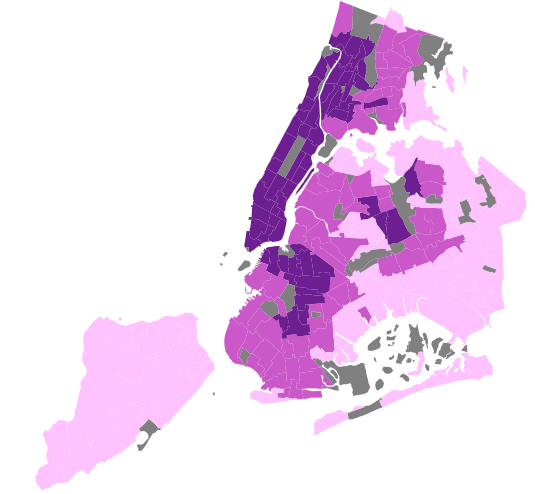
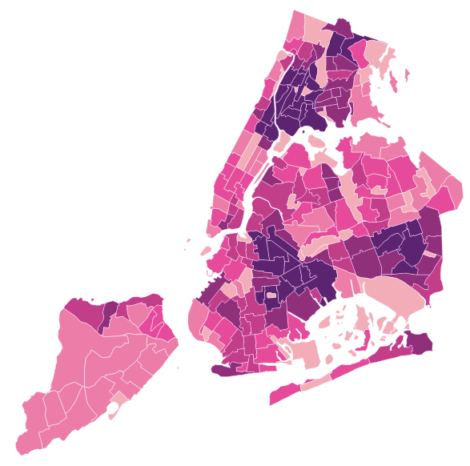
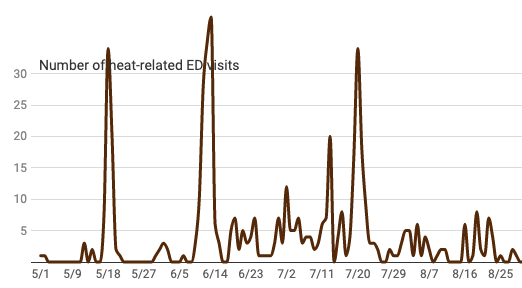

Key Topics
Explore resources on key topics that shape our lives and our health. Get data, data stories, special features, and neighborhood reports for comprehensive, interdisciplinary topics.
Outdoor Air Quality
New York City's air contains particles, drops of liquid, gasses, and other pollution that can affect health. Bad air quality can be particularly dangerous for older adults, children, and people with heart or lung conditions.
Air quality varies from neighborhood to neighborhood, based on local levels of emissions and many other factors. We monitor air quality using the New York City Community Air Survey (NYCCAS), NYC's comprehensive air quality monitoring and modeling network. NYCCAS allows us to understand neighborhood differences in air quality - and what contributes to those differences.
- NYCCAS Annual Report

- Data on different pollutants, key factors, and air quality trends over time in New York City - all at the NYCCAS Annual Report.
- Neighborhood air quality
- 
- Use our Neighborhood Air Quality Explorer to find out your neighborhood's air quality, how it compares, and what affects it.
- NYCCAS snapshots

-
Snapshots of
findings on cleaner fuels,
noise, environmental justice, and more.
Air quality during COVID-19.
More data stories about air quality.
Get the data: related indicators on the EH Data Portal
Climate and Health
Climate, including extreme weather, has a direct impact on health. As NYC's climate changes, along with the world's climate, we expect more frequent and intense heat waves, increased rainfall and more severe storms. These will add to existing weather-related risks. Already, heat kills more people than all other natural disasters combined.
In New York City, those most vulnerable to the dangers of hot weather are older adults and people with health conditions like heart disease, diabetes, and cognitive impairment - especially those in low-income, Black, and Brown communities. Air conditioning is the best defense against the heat. Equitable access and responsible use of air conditioning is crucial to protect the lives of all New Yorkers while reducing impacts on the environment.
- Heat Vulnerability Index
- 
- Use the interactive Heat Vulnerability Index to find out your neighborhood's vulnerability to heat, how it compares, and what affects it.
- Near real-time data
- 
- Syndromic surveillance of heat-related illness in emergency departments.
- Neighborhood Report
-
Climate
and Health in
your neighborhood
- Data stories
-
Protecting
New Yorkers
from extreme heat